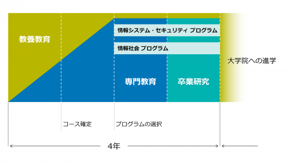

将来の職業
香川大学創造工学部情報コースに入るメリットは、卒業後の職業の選択肢が多いということです。
情報通信業はもちろん建設業や製造業、公務員など幅広く就職しています。
国立の香川大学は近隣の県では有名で、かつ将来的に足りなくなることが予想されているITエンジニアの卵ということで就職では怖いものがありません！
ロジカル思考演習やチームワーキング演習で学習した内容を活用し、就職活動を有利に進めることができます。
また、教員免許（情報）や基本情報技術者、応用情報技術者などの資格も取得可能で、就職をさらに有利にします。
ここに入っておけば将来に迷う心配がありません！
先生紹介
喜田 弘司 先生
専門分野：サイバーセキュリティ，人工知能
研究：データバレー、音声対話、検索エンジン、航空管制など
喜田先生は、セキュリティ異常検知サービスや管制支援システムなどの研究で、社会の安全に貢献しています。 AIを使ったウイルス対策や航空機の衝突防止など、先端的な研究に取り組んでおられます。
八重樫 理人（やえがし りひと）先生
専門分野：ソフトウェア工学、情報システム工学
ゼミ研究：観光ガイドブック「カダパン」、観光地支援「カダビンゴ」
八重樫先生は、ソフトウェア開発と地域活性化を結びつけた研究を行っています。 学生の研究成果が実社会で活用されている点も大きな魅力です。
橋本 正樹（はしもと まさき）先生
専門分野：情報セキュリティ
研究：偽サイトや偽情報の検出、システム活動の可視化
情報の信頼性を高めるための研究に取り組んでおり、 特にフィッシング詐欺の防止に貢献しています。
情報コースの人数と女子比率
2025年度より、「情報システム・セキュリティコース」が 「情報コース」へ改称され、募集定員が40名から70名に拡大されました。 国の高度情報専門人材育成支援によるもので、地域のDXや社会実装に貢献する人材の育成が目的です。
カリキュラムも刷新され、「情報システム・セキュリティプログラム」と 「情報社会プログラム」の2コース制になりました。 先端技術を学びながら、社会課題に対応できる技術者を目指せます。

皆さんは日本の大学の情報系分野において女子学生の割合がとても低いことを知っていますか？
なんと平均は約15パーセント前後！中には5パーセント未満の大学もあり、まだまだ女子が少ないことが現状です。
しかし香川大学創造工学部情報コースの女子率はなんと30パーセント！！驚異の比率！！72人中21人も女子がいるから情報系を学びたい女性たちにとっては心強い環境です！！
情報系に行きたいけれど男の人ばかりだったらどうしようと悩んでいるそこのあなた！！
香川大学に来て一緒に学ぶ仲間を見つけませんか？🌸✨